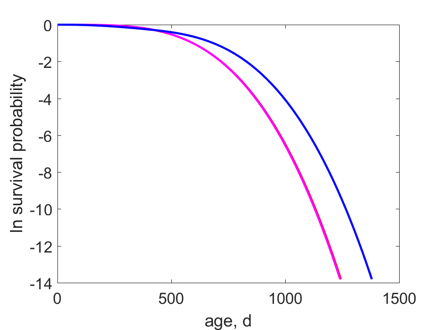
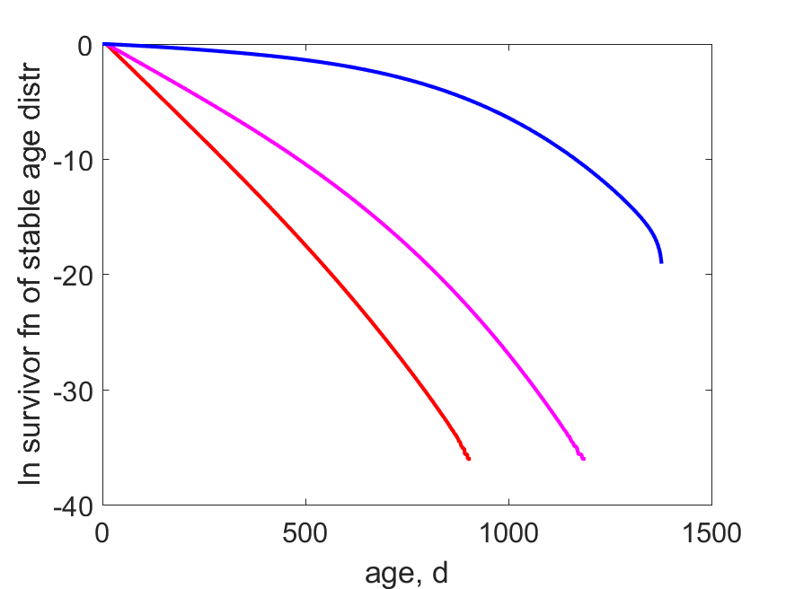

Bulinus globosus: Population traits
at T = 26 °C with background hazards for embryo, larva, juv, adult: 0, 0, 0, 0 1/d

Ln survival probability as function of age,
with (dashed) and without (solid) thinning at max (red) and min (blue) scaled functional response for females.

Ln survivor function of the stable age distribution as function of age,
with (dashed) and without (solid) thinning at max (red) and min (blue) scaled functional response for females.
| model abj | f_min | f | f_max | date: 2021/02/19 | ||||
|---|---|---|---|---|---|---|---|---|
| symbol | units | thin false | thin true | thin false | thin true | thin false | thin true | description |
| f | - | 0.287377 | NaN | 0.643688 | NaN | 1 | 1 | scaled functional response |
| r | 1/d | 0 | 0 | 0.0197827 | NaN | 0.034282 | NaN | spec pop growth rate |
| t2 | d | NaN | NaN | 35.038 | NaN | 20.219 | NaN | population doubling time |
| a_b | d | 11.4415 | NaN | 10.0062 | NaN | 9.32319 | NaN | age at birth |
| t_j | d | 385.487 | NaN | 66.7441 | NaN | 40.9946 | NaN | time since birth at metam |
| t_p | d | 476.351 | NaN | 80.1761 | NaN | 49.0157 | NaN | time since birth at puberty |
| S_b | - | 0.999962 | NaN | 0.999974 | NaN | 0.999979 | NaN | survival probability at birth |
| S_j | - | 0.999721 | NaN | 0.999838 | NaN | 0.99988 | NaN | survival probability at metam |
| S_p | - | 0.774132 | NaN | 0.997687 | NaN | 0.999232 | NaN | survival probability at puberty |
| theta_0b | - | 0.0195492 | NaN | 0.179899 | NaN | 0.273602 | NaN | frac of ind that is embryo |
| theta_bj | - | 0.0195821 | NaN | 0.147714 | NaN | 0.198861 | NaN | frac of ind that is pre-metam juvenile |
| theta_jp | - | 0.587444 | NaN | 0.454779 | NaN | 0.349643 | NaN | frac of ind that is post-metam juvenile |
| theta_pi | - | 0.373425 | NaN | 0.217609 | NaN | 0.177894 | NaN | frac of ind that is adult |
| L_bi | cm | 0.195536 | NaN | 0.259925 | NaN | 0.272378 | NaN | mean structural length of post-natals |
| L2_bi | cm^2 | 0.0423888 | NaN | 0.0992624 | NaN | 0.118813 | NaN | mean squared structural length of post-natals |
| L3_bi | cm^3 | 0.00989916 | NaN | 0.0495767 | NaN | 0.0729937 | NaN | mean cubed structural length of post-natals |
| Ww_bi | g | 0.0111789 | NaN | 0.0639324 | NaN | 0.10583 | NaN | mean wet weight of post-natals |
| L_pi | cm | 0.267078 | NaN | 0.520421 | NaN | 0.589288 | NaN | mean structural length of adults |
| L2_pi | cm^2 | 0.0714622 | NaN | 0.287949 | NaN | 0.383825 | NaN | mean squared structural length of adults |
| L3_pi | cm^3 | 0.0191545 | NaN | 0.168687 | NaN | 0.275796 | NaN | mean cubed structural length of adults |
| Ww_pi | g | 0.0216307 | NaN | 0.217533 | NaN | 0.399863 | NaN | mean wet weight of adults |
| R | 1/d | 0.00590535 | NaN | 0.083056 | NaN | 0.153177 | NaN | mean reproduction rate of adults |
| J_X | g/d | 0.000690823 | NaN | 0.00507237 | NaN | 0.00997113 | NaN | mean ingestion rate of wet food by post-natals |
| Y_PX | mol/mol | 0.109375 | NaN | 0.109375 | NaN | 0.109375 | NaN | yield of faeces on food |
| Y_VX | mol/mol | 0.0437396 | NaN | 0.19604 | NaN | 0.25199 | NaN | yield of living structure on food |
| Y_VX_d | mol/mol | 0.0431123 | NaN | 0.00229622 | NaN | 0.000733304 | NaN | yield of dead structure on food |
| Y_EX | mol/mol | 0.00565452 | NaN | 0.0567662 | NaN | 0.113358 | NaN | yield of living reserve on food |
| Y_EX_d | mol/mol | 0.00557343 | NaN | 0.000664904 | NaN | 0.000329878 | NaN | yield of dead reserve on food |
| Y_CX | mol/mol | 0.792545 | NaN | 0.634858 | NaN | 0.524214 | NaN | yield of CO2 on food |
| Y_HX | mol/mol | 0.572394 | NaN | 0.458508 | NaN | 0.378599 | NaN | yield of H2O on food |
| Y_OX | mol/mol | -0.861893 | NaN | -0.690408 | NaN | -0.570082 | NaN | yield of O2 on food |
| Y_NX | mol/mol | 0.118882 | NaN | 0.0952286 | NaN | 0.078632 | NaN | yield of N-waste on food |
| mu_TX | J/mol | 422899 | NaN | 341745 | NaN | 283610 | NaN | yield of heat on food |
Remarks
- Reprod-code O applies. Sex ratio is assumed to be 1:1. Parameters of male and female are the same.
- Buffer handling rule: release each egg as soon as reproduction buffer allows
- Weights of adults do not include reproduction buffer